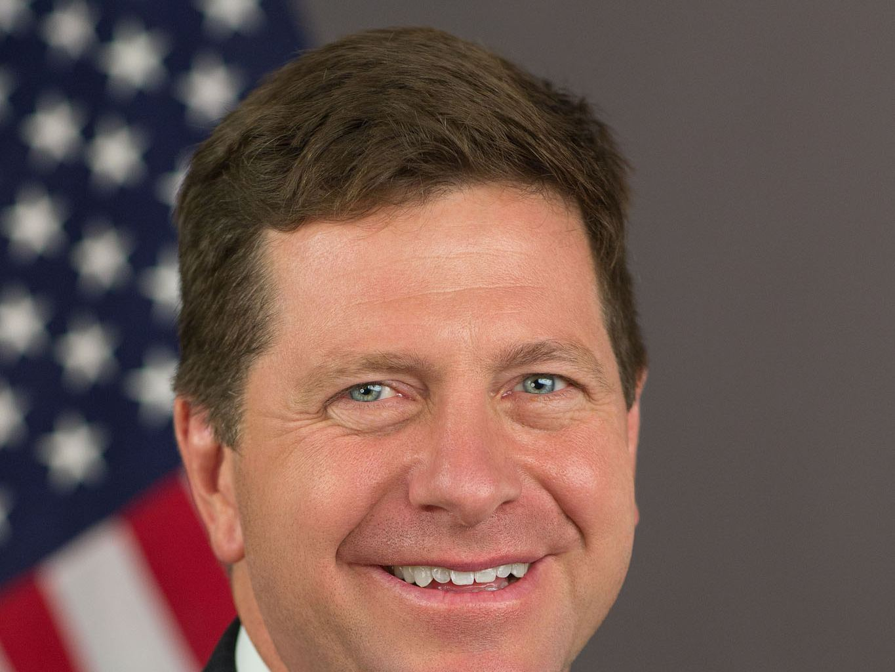

特朗普任命国家情报总监 Jay Clayton 为 AI 主管，领导「超级智能力量」


NPR 2026 年 10 月 4 日报道，特朗普周日在 Truth Social 宣布，国家情报总监 Jay Clayton 出任白宫 AI 主管（AI czar），领导新设的「Super Intelligence Force」。特朗普写道，这个小组将「ensure that America continues to lead the World in Super Intelligence」，并协调联邦政府与消费者、公共利益团体、宗教组织、关键基础设施提供者以及「超级智能公司」之间的沟通。NPR 指出，特朗普更倾向用 super intelligence 一词代替 artificial intelligence。
「ensure that America continues to lead the World in Super Intelligence」
据 NPR，小组成员还包括联邦贸易委员会主席 Andrew Ferguson、人事管理局局长 Scott Kupor，以及国防部负责研究与工程的副部长 Emil Michael。Clayton 此前担任过纽约南区联邦检察官和 SEC 主席；他上月接受 CNBC 采访时称超级智能是「national security issue」，并反对「暂停」开发的呼声。
土耳其阿纳多卢通讯社援引《华尔街日报》周六报道称，该小组有 120 天时间准备结论，将审视现行法律和国会可能采取的步骤；其章程要求制定应对先进 AI 威胁的计划，同时避免妨碍创新与竞争的监管，并审查数据泄露、黑客攻击、模型越狱等 AI 事件向政府报告的方式。此前一周，特朗普在白宫与 OpenAI 总裁 Greg Brockman、Anthropic CEO Dario Amodei、英伟达 CEO 黄仁勋等人会面，企业签署了一份自愿性质的安全协定。NPR 提醒，国会至今尚未通过全面监管 AI 的联邦法律。本稿只转述已核对的公开报道。
摘记，不是官方媒体。事实以所链出的原始报道为准。